Movie review by : SFAM
Year : 2002
Directed by : Kenji Kamiyama
Written by : Masamune Shirow (story), Kenji Kamiyama (chief writer), et al.
Degree of Cyberpunk visuals : High
Correlation to Cyberpunk themes : Very High
Rating : 9/10
Key cast members :
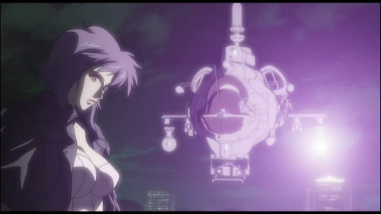
Overview: Ghost in the Shell Stand Alone Complex (GITS SAC) uses the same characters as Masume Shirow and Mamoru Oshii, but takes place prior to the first GITS movie. Like the GITS movies, GITS SAC revolves around Section 9, an elite anti-terror police force that works behind the scenes to keep the peace. The overall tenor of this series is far more action oriented than Oshii's movies. While there are a few philosophy moments (including a terrific one with Batou and the Tachikomas), the vast majority of the season is action oriented. In short, we get high-end, slick cyberpunk butt-kicking in GITS SAC ? one that's well worth watching, even if you do miss the philosophy.
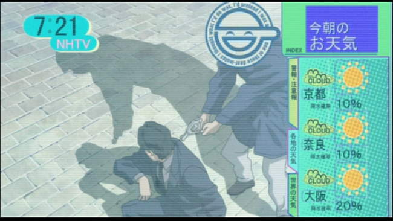
The Laughing Man Story: In a world where cyberization has become the norm for a large segment of the population, a number of negative side effects have become possible. In addition to cyberbrain hacking, a disease called Cyberbrain Sclerosis has emerged which seems to randomly affect many who've undergone significant cyberization. The Mega-corporation, Serano Genomics has produced a cure for Cyberbrain Sclerosis ? Serano Micromachines, a nanotech implant device that, when ingested regularly supposedly halts and eventually works to cure the disease. Unfortunately, the Micromachines only seem to help a small segment of those contracting the disease. A hacker named the Laughing Man seems bent on exposing a cover-up ? one which posits that the lost Murai Vaccine has an almost permanent curative for those with Cyberbrain Sclerosis. Unfortunately for Serano Genomics, a real cure for Cyberbrain Sclerosis would decimate their profitability.
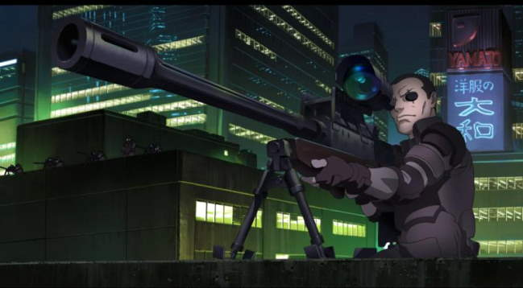
The Laughing Man is a hacker extraordinaire who is able to hack into cyberbrains at will, and worse for public confidence, is able to take over TV shows at will. Section 9 has been brought in to find and stop the terrorist known as the Laughing Man. Throughout the season, while there are side plots, it's the Laughing Man story which drives Section 9. As it continues, the intrigue builds and the plot thickens. Eventually, corporate betrayal, political scandals and personal vendettas play a role in setting the context and exposing the larger truth.
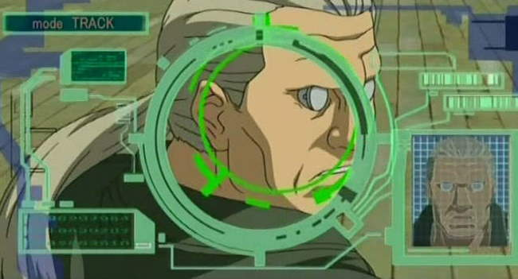
The Side Stories: While the Laughing Man is the focus of the season, there are many side quests in GITS SAC. Some of the episodes closely resemble stories from Masume Shirow's original GITS Graphic Novel. Among these, Batou has an interesting commando encounter with his past, and Aramaki is taken prisoner by thieves in a bank, only to get involved in a more intriguing plot. For him to survive, Motoko must be able to interpret his actions from afar to correctly figure out his strategy. Generally, the stand-alone episodes are good enough to keep you entertained ? some are excellent.
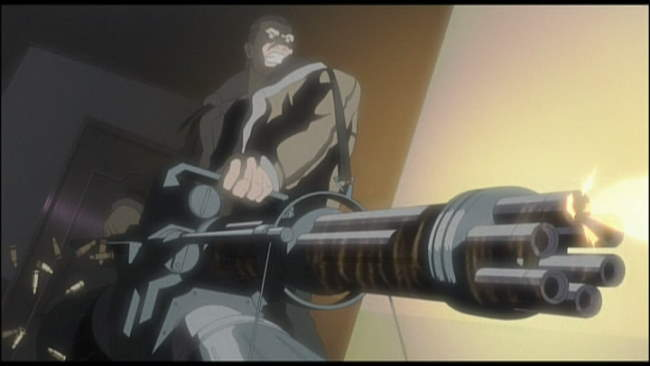
7Th Volume is the Best: While GITS SAC is pretty good throughout the series, the 7th volume ? the last one ? is by far the best. Without the 7th volume, I would probably rate GITS SAC 8 stars, but the 7th volume really deserves a 10 star rating. In the 7th volume, Section 9 is disbanded, while political intrigue hounds their very lives. The team escapes a crack commando unit and then all go their separate ways. Motoko and Batou become the focus of the volume, and in doing so, display more humanity and feeling then they do the rest of the series. On top of this, many of the best FX are found in volume 7.
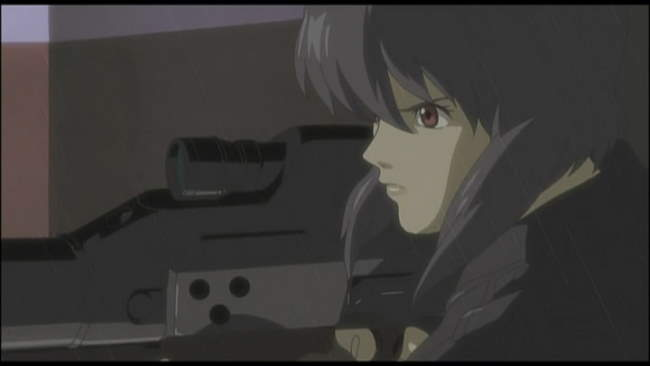
Differences with Oshii and Similarities with Shirow: Whereas Mamoru Oshii's movies centered on the impacts of a cyberpunked society to the individual (Motoko in GITS, and Batou in GITS: Innocence), GITS SAC tends to broaden the filter to look at overall patterns in society. This leads to wonderful throw-away gems like the virtual meeting room (basically a holodeck) where everyone jacks into the meeting and then disappears when complete. We also get plots centering on problems with children in this changed new society, alienation of the masses, and loss of identity and humanity as technology takes center stage in human interaction. GITS SAC is also far more like Masume Shirow's original graphic novel. While it doesn't have the overt sexuality of Shirow's work, Motoko is drawn as Shirow would; Shirow's humor is evident in a number of the episodes; and the action takes center stage for the most part.
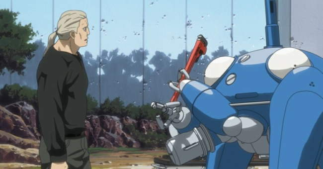
The Tachikomas: Early on, Major Motoko Kusanagi determined that the Tachikomas weren't destined to be front-line fighting droids. For this reason, in order to become useful, the Tachikomas sped up their learning AI processing. As the season progresses, the Tachikomas begin to exhibit full signs of sentience, including Freewill and more devious functioning ? so much so that Motoko becomes worried about their potential. Many interesting discussions take place over the development of the Tachikomas. One of the more intriguing ones that wasn't really answered was whether being a digital life form instead of an analog one, would the Tachikomas ever develop a Ghost?
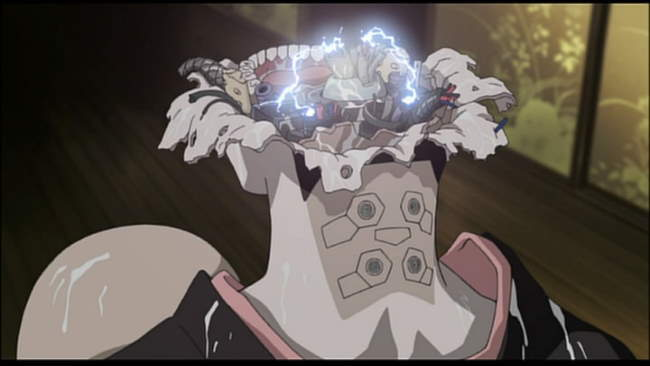
External Memory Devices and Cyberbrains ? Augmented Thinking: One of the really interesting things about the GITS world is the integration of augmented brains. Conversations and complex thinking become dramatically enhanced. While the philosophical conversations are significantly reduced in GITS SAC when compared to the GITS movies, we still get a myriad of instances where cyberbrains allow people to call up a set of details about any subject that no other human could ever do. Cyberbrains in GITS SAC show a society where humanity truly has become post-human in a very real way, even though the actual look of most humans hasn't changed much.
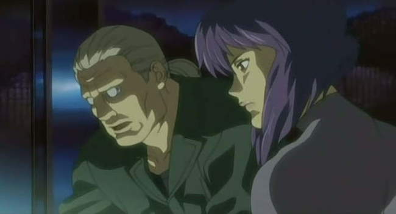
The Dubbing: GITS SAC is one of the few animes where the English cast is just about as good as the Japanese cast. Both William Knight (Aramaki) and Richard Epcar have been in their roles from the initial Ghost in the Shell movie in 1995, and all of the cast members have stayed consisted for both GITS Innocence and GITS SAC. Atsuko Tanaka (Motoko), Akio Ôtsuka (Batou), and Kôichi Yamadera (Togusa) have also been in their roles since 1995. It's hard to pass up on Atsuko Tanaka though ? I love her as Motoko. In any event, while the moods between the English and Japanese cast are different, they are both excellent.
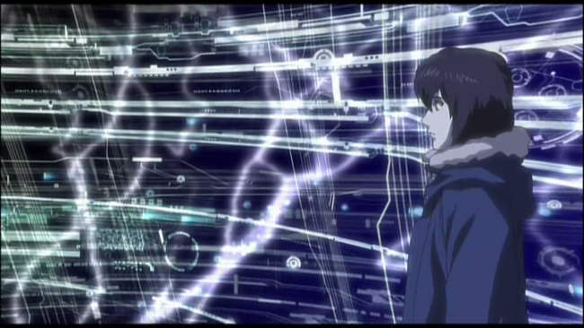
The Sound: GITS SAC consistently has decent quality sound supporting the visuals. The use of the side speakers for voices is especially emphasized. The sound FX (explosions, gun shots, car chases) are always top notch. But truly, the most impressive thing in terms of sound is the sound track. The opening and closing songs (Inner Universe and Lithium Flower) by Yoko Kanno are flat out terrific. Throughout, we are treated to a variety of songs and background music, which almost always add to the action and visuals on screen.
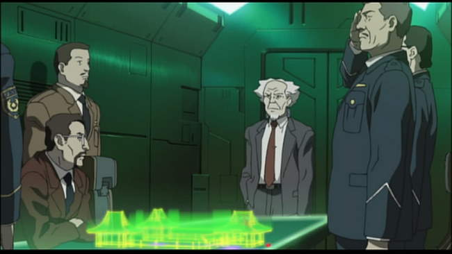
The Visuals: GITS SAC has a variety of aids that add to the overall quality of the look. While some shots look pretty basic, others involve a variety of cool FX, including digital color grading, a myriad of environmental effects, and cell-shaded computer models. GITS SAC gives us a variety of color palettes including dominant greens, reds and blacks, and occasional blues and yellows. Overall, GITS SAC is a very professional, high quality production.
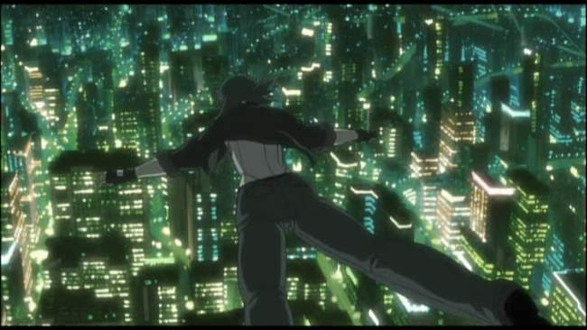
The Bottom Line: GITS SAC is a high quality cyberpunk production. While I personally like the tone and tenor of Oshii's movies far more than I do GITS SAC, this is a personal preference. GITS SAC provides continued quality action wrapped up in impressive visuals and sound. While the first 6 volumes might only merit an 8 star rating, the conclusion is just terrific. This, along with the overall high level crafting GITS SAC provides throughout (visuals, sound, dubbing, songs) certainly raises the bar. And do yourself a favor ? watch GITS SAC on a system with high quality surround sound ? you'll notice the difference.